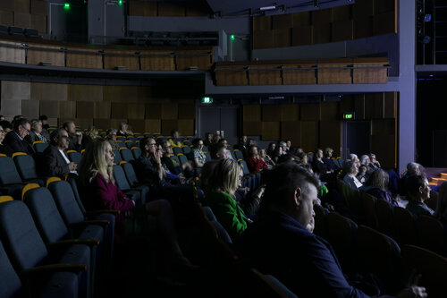
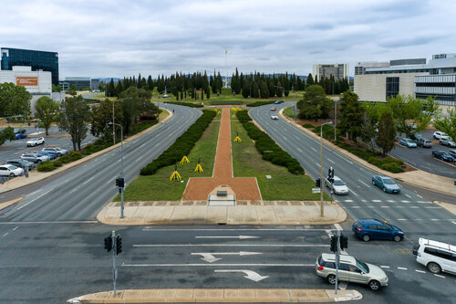
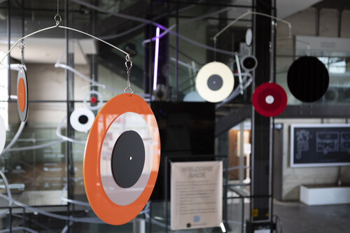
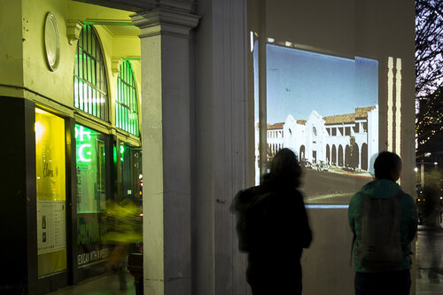
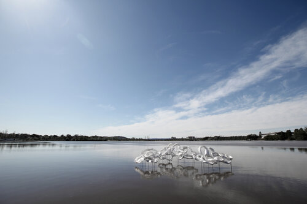

Keep up to Date

contour 556 | Localjinni's Twlight Video walk in Canberra
December 21st, 2020

contour 556 | 2020 Symposium
Decemeber 11th, 2020

contour 556 | Official Video
November 10th, 2020

contour 556 | 2020, Canberra's Biennial Public Art Festival | Kristy Francis
Novemeber 10th, 2020

Region Media Group
November 6th, 2020

When it Comes to Grumpy, What Really Irritates me... | Clive Williams
November 6th, 2020

contour 556 takes Art from the Lake to Canberra's Streets |The RiotACT
Septembers 21st, 2020